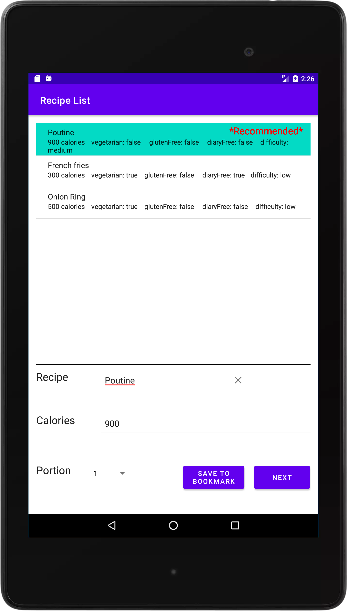

Vision Statement
 Quick Kitchen will be used to help people find recipes which they can prepare. It will allow users to search based on their needs and provide customised results.
The primary users for this mobile application will be students, working class people or people who do not get proper time to prepare nutritious meals and mostly rely on fast foods. The application will allow the users to search recipes based on their available ingredients at home and duration to prepare the meal. All available recipes will have proper nutrition information available with the recipe so the user can get the required nutrition they need and will be healthier than fast food or processed food.
People who keep track of their calorie intakes, housewives and hobbyist cooks will also be able to use this application. There will be a feature where the user can search recipes based on total calorie on the meal which allows them to keep track of their calorie consumption. Users will also be able to search direct recipes by name or based on occasions (e.g., thanksgiving, birthday party).
The application will be easy and simple to use. As mentioned, it will have multiple search customizable options. However, a user does not need to use all of them. Every person has different needs. A user will be able to use as minimum as one option and the application will be able to find a proper recipe based on the users need.
Getting required calories a day and getting proper nutritious food are not the same thing. There are still people who are suffering from malnutrition. A vast majority of working-class people and students are relying on fast-food chains and processed food for their daily meals. Having these foods once or twice will not hurt anything but having these every day can bring major health issues like heart diseases, obesity, high blood pressure etc. This application is a step towards improving this situation. Many people do not know how quickly a meal can be prepared with their available ingredients. Also making a meal does not have to be difficult. This application will allow the users to get quick recipes which will be both less time consuming and nutritious than processed foods. Apart from this, the application can be a great resource for people who want to learn and try new recipes. Its customizable search feature will allow users to find unique and delicious recipes with proper instructions to prepare.
The application is primarily planned to launch as an android mobile application. However, in future versions it will also support iOS and web interface.
This Quick Kitchen application will be considered as a successful project if people who are currently relying on processed food as their daily meal start to use this application to prepare home-made nutritious meals as a replacement of processed food and other users use it as their cooking resource. Another significant criteria is, this project will be able to reduce the monthly expenses on foods by reducing the rate of eating out.
The Dev Team
Daxuan Chen
Front-end Development
Quan Hong
QA & Testing
Jayed Rafi
Back-end development &
Web
Lingyun Meng
Back-end development
Omar Reda Moustafa
Testing & Web
Features
Rank System

Ranking view feature on this application allows users to see the
recipe list based on popularity. With this feature user can easily
pick the most popular recipe and can save time finding one from
somewhere else for a good one. It allows user to find a recipe that
have been tried by many people and liked as well.
Portion Adjustment
The portion adjustment feature allows the user to modify the recipe
instruction and ingredients based on the number of people the user
is looking forward to cooking for. This feature comes in handy when
a person is preparing to make a meal for a huge amount of people
without having a prior idea of the recipe. The application adjusts
the quantity based on the numbers and helps to make the user's
experience easier. some text.
Search by Different Needs

Quick kitchen makes everyones kitchen experience better by introducing multiple search features by needs. The application interface allows user to customize the result based on difficulty, duration and many more. This feature makes this a perfect tool for everyone regardless the user is a professional or beginner.
Shopping List

This application makes the meal planning and grocery shopping a lot easier. With its built-in shopping list feature, user can easily see what ingredients it needs to prepare the meal. Interestingly the shopping list is customized based on portion or the amount of people going to consume the meal. Which helps to prevent wastage of extra ingredients. No need to jot down ingredient list on paper!
Bookmark Recipes

Quick Kitchen allows you to bookmark your favourite recipes with just click of a button. This feature helps user to find their desired recipe in a few clicks. Once you bookmark a recipe it will be saved on your personal recipe list so you can easily keep track of your favourite recipes without any hassel.
Filter list

This feature allows the application to sort through calories or recipe names. It auto fills recipe description when we press a recipe item from the list. Thought it happens all in the backend but it is a feature that makes the system more user-friendly.
Step by Step instructions

This feature helps user to see the step by step process to prepare the meal. It is easy to follow as this doesn’t require previous knowledge. Also it helps to make the meal in consistent manner as every time the steps will be similar so no chances of making errors. Also this feature helps to save time as the user can quickly move to next step. Overall this feature adds comfort in terms of user experience.
Development
Product Architecture
Recording
Report
Download & Installation
System preferance: This application is currently being offered only on Android phones.
Source code: GitLab Source
Installation with APK (Final release): GitLab Release